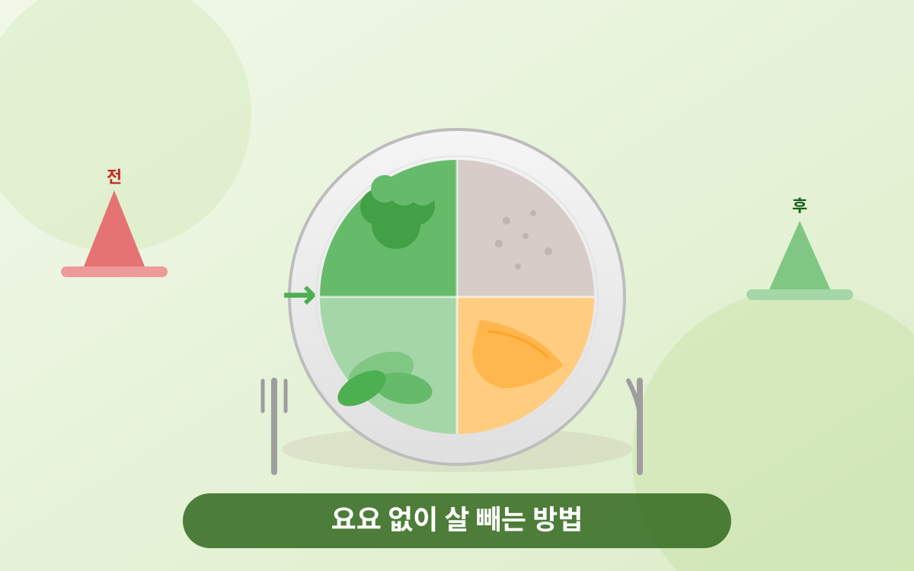

우리나라 성인 3명 중 1명은 고혈압 환자입니다. 고혈압은 증상이 없어 '침묵의 살인자'라 불리지만, 방치하면 심장병, 뇌졸중, 신장 질환으로 이어질 수 있는 심각한 질환입니다.
그러나 고혈압 초기나 경계성 혈압(120~139/80~89mmHg) 단계라면, 생활 습관만으로도 혈압을 정상 범위로 낮출 수 있습니다. 의학적으로 검증된 방법 7가지를 소개합니다.
혈압, 어느 수치가 위험할까?
| 구분 | 수축기 (위) | 이완기 (아래) |
|---|---|---|
| 정상 | 120 미만 | 80 미만 |
| 주의 (경계성) | 120~139 | 80~89 |
| 고혈압 1기 | 140~159 | 90~99 |
| 고혈압 2기 | 160 이상 | 100 이상 |
집에서 혈압을 잴 때: 아침 기상 후 소변을 본 뒤 5분 안정 후 측정하고, 저녁 취침 전에도 측정해 평균값을 기록하세요. 1회 측정보다 여러 날 평균값이 더 정확합니다.

혈압 낮추는 생활 습관 7가지
나트륨 줄이기 — 하루 2,000mg 이하
소금(나트륨)은 혈압을 올리는 가장 직접적인 원인입니다. 한국인 평균 나트륨 섭취량은 권장량의 2배를 넘습니다. 국물은 건더기 위주로 먹고, 가공식품·배달 음식을 줄이는 것만으로도 혈압이 2~8mmHg 내려갈 수 있습니다.
수축기 혈압 최대 -8mmHg규칙적인 유산소 운동
하루 30분, 주 5회 걷기·수영·자전거 타기 같은 중강도 유산소 운동은 혈압을 지속적으로 낮추는 효과가 있습니다. 운동 효과는 운동을 멈추면 사라지므로 꾸준히 해야 합니다.
수축기 혈압 최대 -9mmHg체중 감량
체중이 1kg 줄어들면 수축기 혈압이 약 1mmHg 낮아집니다. 복부 비만은 특히 고혈압과 강한 연관이 있습니다. 목표 체중까지 빠르게 가지 않아도 괜찮습니다. 현재 체중에서 5~10%만 줄여도 혈압이 의미 있게 개선됩니다.
수축기 혈압 최대 -5mmHgDASH 식단 따르기
DASH(Dietary Approaches to Stop Hypertension) 식단은 혈압 관리를 위해 과학적으로 설계된 식이법입니다. 채소·과일·저지방 유제품·통곡물을 늘리고, 포화지방과 나트륨을 줄이는 방식입니다. 2주 만에 효과가 나타날 수 있습니다.
수축기 혈압 최대 -11mmHg음주 줄이기
알코올은 혈압을 직접적으로 올립니다. 하루 1잔(맥주 355ml 기준) 이상 마시면 혈압 상승 위험이 높아집니다. 음주량을 절반으로 줄이기만 해도 수축기 혈압이 4mmHg 낮아질 수 있습니다.
수축기 혈압 최대 -4mmHg금연
담배 한 개비를 피우면 혈압이 일시적으로 10mmHg 이상 올라갑니다. 흡연자는 비흡연자보다 고혈압 위험이 2~4배 높습니다. 금연은 혈압뿐 아니라 심장, 폐, 혈관 전체 건강을 위한 가장 강력한 선택입니다.
심혈관 위험 대폭 감소충분한 수면과 스트레스 관리
하루 6시간 미만의 수면은 고혈압 위험을 높입니다. 만성 스트레스는 코르티솔·아드레날린 분비를 늘려 혈압을 지속적으로 올립니다. 하루 7~8시간 수면 확보와 명상·심호흡 같은 이완 기법을 실천해 보세요.
수축기 혈압 최대 -5mmHg칼륨 섭취를 늘리세요
칼륨은 나트륨의 혈압 상승 효과를 상쇄하는 미네랄입니다. 칼륨이 풍부한 식품을 꾸준히 먹으면 혈압 조절에 도움이 됩니다.
- 채소: 시금치, 브로콜리, 감자, 토마토
- 과일: 바나나, 아보카도, 오렌지, 멜론
- 콩류: 검은콩, 렌틸콩, 강낭콩
주의: 이미 고혈압 약을 복용 중이라면 임의로 약을 끊지 마세요. 생활 습관 개선으로 혈압이 좋아지면 의사와 상의해 약 용량을 조절할 수 있습니다. 신장 질환이 있는 경우 칼륨 섭취에 주의가 필요합니다.
마치며
고혈압은 약만으로 관리하는 질환이 아닙니다. 위에 소개한 7가지 생활 습관을 동시에 실천하면 수축기 혈압을 최대 20~30mmHg까지 낮출 수 있다는 연구 결과도 있습니다.
오늘부터 한 가지씩 시작해 보세요. 나트륨 줄이기부터 시작해도 충분합니다.